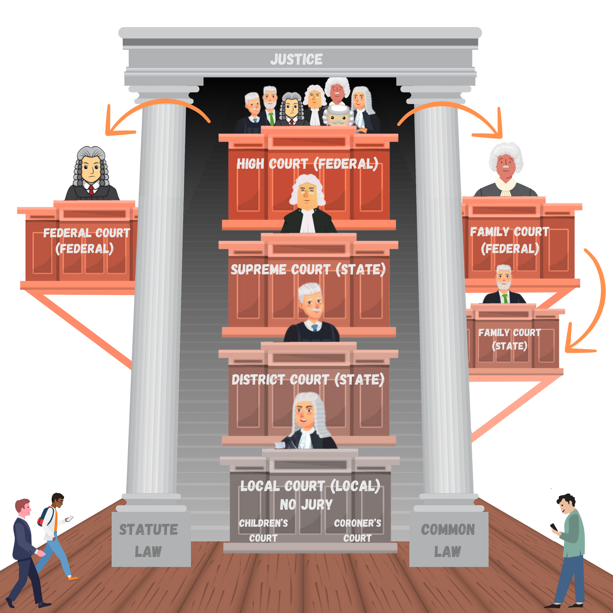
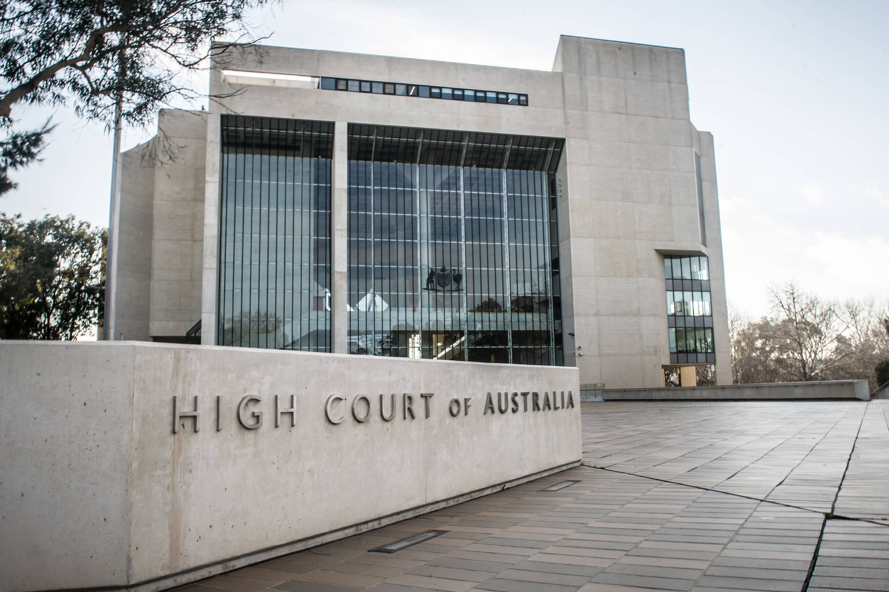
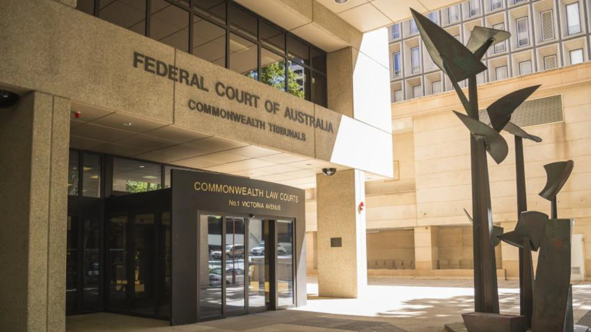
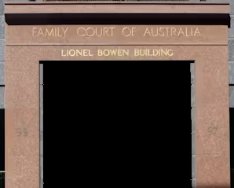
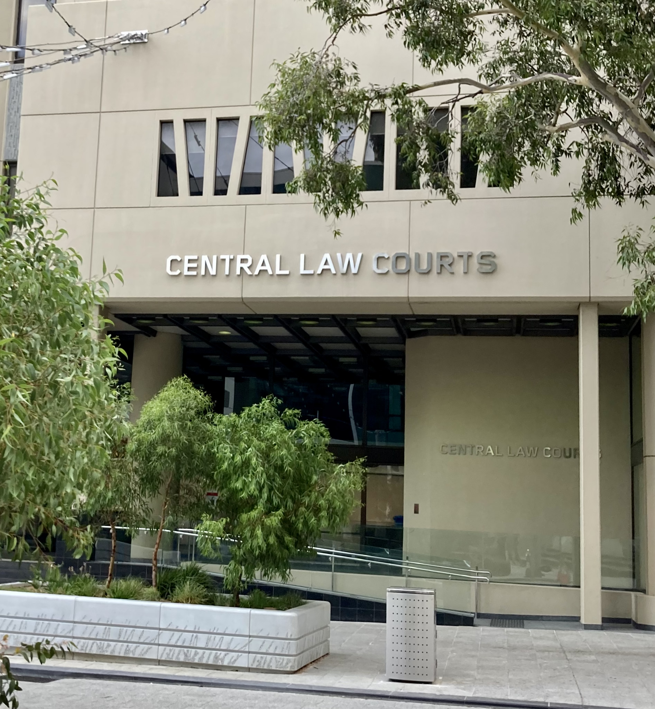
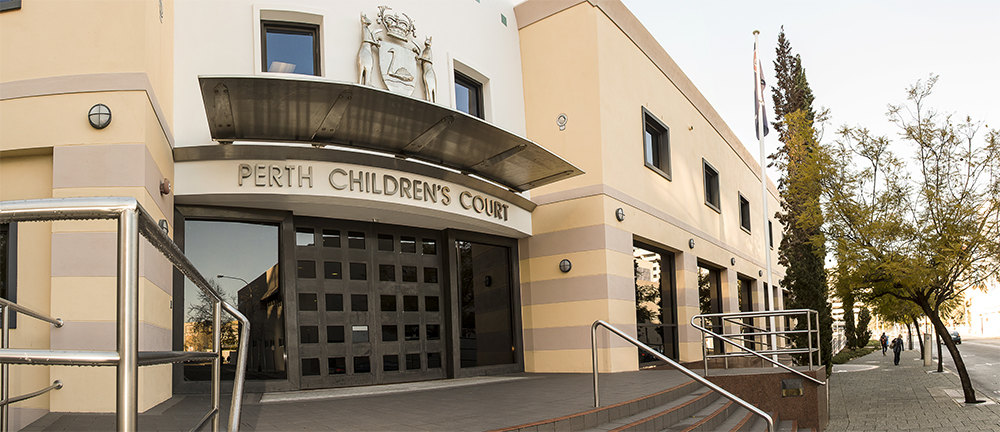

Australia's Court Hierachy
An explanation of the hierachy of Australia's courts.
Diagram of the Hierachy
This is the diagram of the hierachy of Australia's courts. The High Court is the highest court, and below it are the Federal Court (federal), the Family Court (federal), the Family Court (state) and the Supreme Court (state). Below the Supreme Court is the District Court (state), below that is the Local Court (local). Part of the Local Court is the Children's Court and the Coroner's Court.
The High Court
The High Court interprets and applies the law of Australia. They often deal with constitutional issues.
The Federal Court
The Federal Court deals with cases in relation to admiralty, bankruptcy, competition, consumer protection, corporations, defamation, human rights and anti-discrimination, industrial and employment, intellectual property, taxation and native title.
The Family Court (Federal)
The Federal Family Court deals with divorce, property of a marriage, matters relating to children, maintenance and adoptions, usually through appeals.
The Supreme Court
The Supreme Court deals with serious criminal offences. These cases include murder, manslaughter, treason and civil matters where the dispute is over $750,000.

The Family Court (State)
The State Family Court deals with divorce, property of a marriage, matters relating to children, maintenance and adoptions.

The District Court (State)
The District Court deals with cases such as serious assaults, serious fraud, theft, burglary, drug offences and civil claims up to $750,000.

The Local Court
The Local Court deals and handles cases related to fighting, causing commotion/disturbance, theft, beating up someone that doesn’t cause very serious injuries, intentionally damaging other’s property and being disorderly.
The Children's Court
The Children’s Court deal with cases that are related to care and protection and crimes commited by people aged 10-17 (under 18).
The Coroner's Court
The Coroner’s Court deals with cases such as certain types of deaths (unexpected, sudden and suspicious), deaths in the case of missing persons, fires and explosions that cause serious damage and/or injury.
Why is the court system structured in a hierarchy?
The court system is structured in a hierachy to ensure that each court only deals with cases that relate to them. For example, the Local Court wouldn't want to interpret the Australian Constitution, and the High Court wouldn't want to settle a dispute over a single car theft. The hierachy ensures that the courts stay in order and only handle cases that are at their level, if not, refer them to a higher or lower court.
What are the benefits of this structure?
Some of the benefits of the court hierachy are that the hierachy ensures that every court only handles cases relevant to their level and power, as a local court interpreting the constitution will be above their level; the court hierachy ensures that this case goes to its relevant court, e.g. the High Court. This ensures that each court can manage their time well, as they do not have to deal with cases above or below their level, and can focus on what relates to them and their purpose. The hierachy also allows for what is known as an appeal, where a case in which either side is unhappy with the result can be requested for hearing by a court higher in the hierachy.
How does the appeals process work within the court hierarchy?
An appeal is requested by either party in a civil case, or requested when the outcome of a case is not satisfactory in a criminal case. The request (in certain special cases) then goes to a court higher in the hierachy. The case can then be heard again and a the original judgement overturned or changed. Appeals can keep climbing the hierachy until the High Court, where the decision made is final, as there is no higher court to appeal to (there are also a lot of court fees if you lose a case after lots of appeals).
What is the role of precedent in the court system?
A precedent is a decision made in a court that is then used as a ruling for future cases of similar nature. A precedent is important in the court system, as it ensures consistency betweeen multiple cases, and fairness. For example, if Jeff Banker is put in jail for 5 years for money laundering, but Rob Washer is not put in jail for the same crime 5 years later, this would serve as a case of injustice and be a court inconsistency. Therefore, the ruling from the case of Jeff Banker would become a precedent, and be applied to Rob Washer's case as well.
Which courts set legal precedents?
All courts can set a legal precedent, however, courts higher up in the hierachy like the High Court and Supreme Courts are usually the ones to set them, as they deal with more complicated cases. A precedent set by a court must be followed by any court lower than it in the hierachy, can does not have to be followed by a court higher in the hierachy. For example, if the High Court sets a precedent, all the courts in Australia must follow it, as they are lower in the hierachy. However, if the Supreme Court sets a precedent, the High Court does not have to follow it, only the courts below the Supreme Court.
How do state and federal court systems interact?
Each court in Australia has its own areas of concern, and its own place in the hierachy. They all handle cases in their area, but can also interact by the form of an appeal, in which a case can be transferred to another court. Each court must also follow precedents set by courts higher in the hierachy, and can also stay up to date with other precedents set in other states (in the case of state courts like the Supreme and District Courts).
Conclusion
The court system in Australia is a complex system that ensures that justice is served with fair judgements. The court hierachy is essential to ensuring that the court system is efficient and effective.